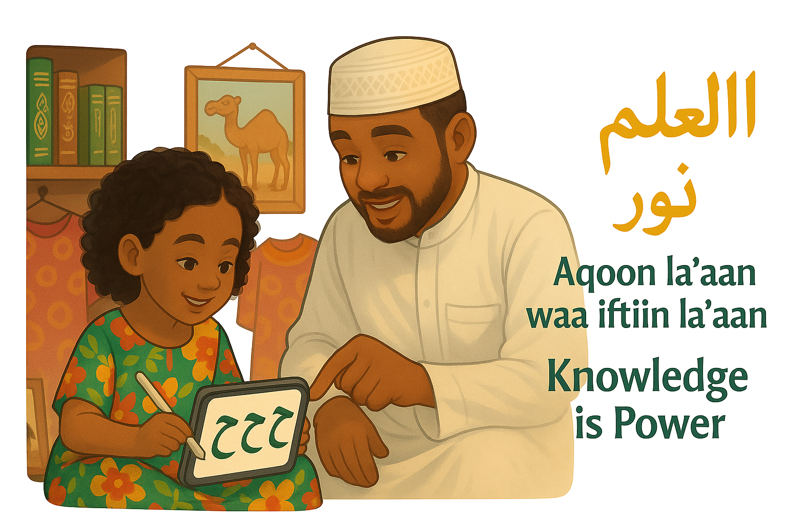

|
|
|  |
As-salamu ʿalaykum wa raḥmatullāh,As parents, we are entrusted with hearts and minds that will grow into the future. Education is not just a duty—it is a mercy. The earlier we begin teaching our children, the more room we give them to flourish. Starting early doesn’t mean pressure or perfection. It means creating a loving environment where your child feels safe, heard, and gently guided. Simple daily interactions—like naming colors, repeating sounds, or tracing letters—can become sacred moments of connection. Your presence, your warmth, your consistency—these are the first tools of teaching. We encourage you to expose your child to learning through a structured and joyful curriculum. One that honors their pace, nourishes their curiosity, and fits naturally into your home life. A gentle routine of learning builds confidence and sets the path for a lifetime of growth. Begin with love. Continue with structure. Stay close through every step.
Abdulhakim Sheik |